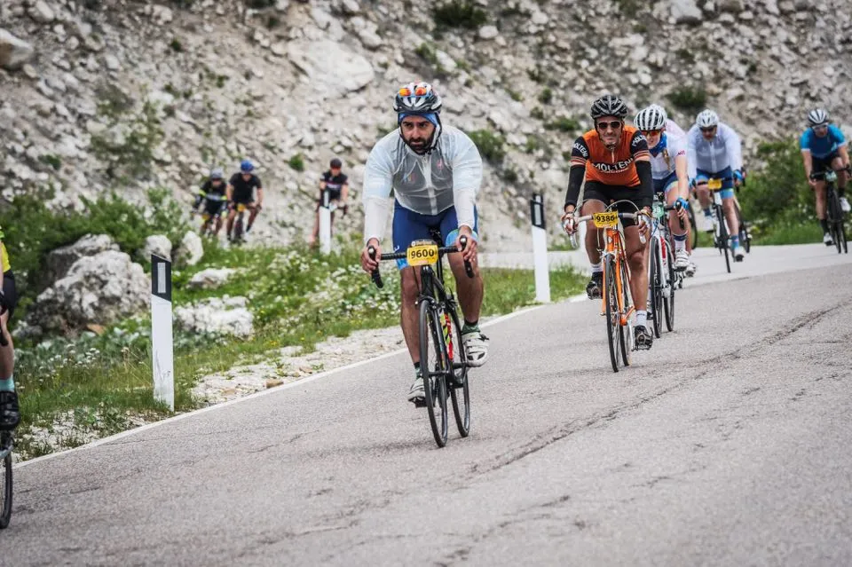

Moltini vinder stål og uld klassen i Dolomiterne

Trods drama i finalen vandt Lars Munch Larsen i weekenden stål og uld klassen i Maratona dles Dolomites
Der er indløbet dette telegram fra Lars Munch Larsen til Squadra Molteni HQ:
Løbet blev kørt konservativt. Taktikken var at starte ud roligt og køre sig op gennem feltet for at se, om der var andre på stål og uld. Der blev observeret flere på fine nyere stålrammer og der blev konverseret høfligt på alle verdenssprog. Men der var ikke nogle vintage cykler kørt af rytter i uld.

Dog var sejren ved at glide af hænderne, da passagen hvor det endelig vinderhug var planlagt – endte med at en italiensk familiefar fik krampe midt på vejen, og hele familien løber til undsætning og blokerer vejen. Jeg må stoppe, træde ud af pedalen – og da jeg kommer i pedalen igen, og træder til – knækker jeg kæden! Jeg må løbe med cyklen til toppen af stigning, hvor jeg finder en neutral mekanikker, der får sat kædeled i, og – efter at have fotograferet mig og cyklen – giver et godt skub, så jeg kan trille i mål.Der kom mange hilsner fra englændere, tyskere, og schweizere, der havde oplevet Squadra Moltini til løb rundt omkring i Europa.